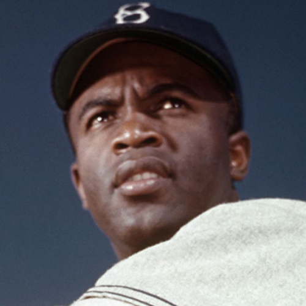
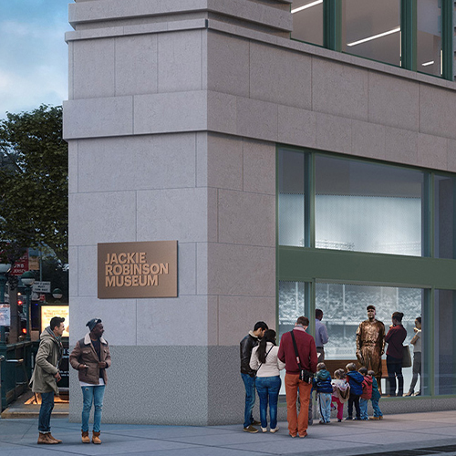
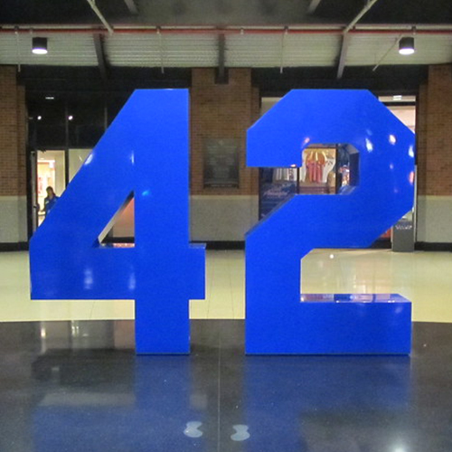

The Jackie Robinson Museum celebrates the continuing legacy of one of the most important Americans of the 20th century. On April 15, 1947, Jackie Robinson took a major step for civil rights, breaking the color barrier in Major League Baseball. Robinson also became a key figure in advancing equal opportunity and first-class citizenship for African-Americans.



The museum will chronicle Robinson’s trailblazing achievements against the backdrop of United States history, from his birth in 1919 to today. Invoking Robinson’s role as a champion for social and economic equality, the museum’s programming will serve as a catalyst for dialogue on today’s social issues.